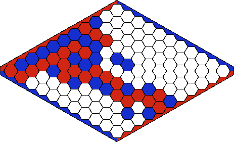

Cette page contient les ressources de l'activité du 8 juin 2016 sur la programmation réseau pour le jeu de hex.

Hexercice
Documentation sur l'internet
- Documentation Python 3.x (modules socket, hashlib, uuid, select; sockets HOWTO)
- Le jeu de Hex
- Recherche arborescente Monte-Carlo
- Structure de données Union-Find
Un peu de technique (pour les geeks)
Pour l'activité du 8 juin 2016, nous avions déployé un réseau composé de :- 3 bornes wifi, dont l'une était configurée comme serveur dhcp
- 2 switchs
- 1 Raspberry Pi B, utilisé comme (pseudo-)routeur et serveur web
Remettre en oeuvre l'activité
Solution 1 : simple, en local sur chaque machine
Il suffit de travailler, individuellement sur chaque machine, sur les sources. Le fichier hexercice.py est le source à compléter au cours de l'activité. Une même machine peut servir à la fois de serveur et de client. Dans un terminal, exécutez :python hexercice.py server Bob tablier 11Dans un autre terminal:
python hexercice.py client 127.0.0.1 Alice tablier 11
Solution 2 : intermédiaire, avec un petit réseau local
Pour remettre en jeu une telle activité en classe, il est suffisant d'utiliser le réseau local déjà en place. Si ce réseau présente trop de limitation, un petit routeur wifi (moins de 50 euros) vous permettra de constituer facilement un petit réseau. Grâce à ce réseau, une machine pourra faire office de serveur et une autre machine sera client. Les joueurs seront sur deux machines différentes du réseau. Il y a aussi la possibilité d'écouter le réseau avec wireshark.Solution 3 : avancée, avec une IA connectée au réseau
On peut se concerntrer uniquement sur le développement du client et connecter au réseau une intelligence artificielle. L'archive simplhex109 (zip) contient une IA développée par Maximillian Laumeister et que nous avons adapté pour jouer avec notre client python. Il faut d'abord la compiler (make), puis pour lancer l'IA comme serveur :python connector.py graphic